Welcome to GitHub Pages.
This is our Story Board page.
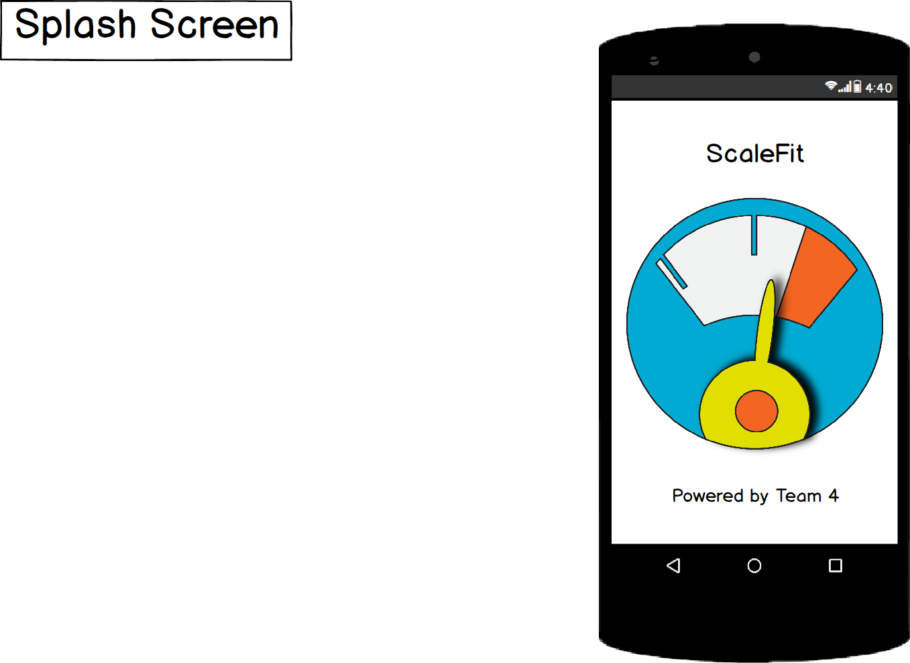 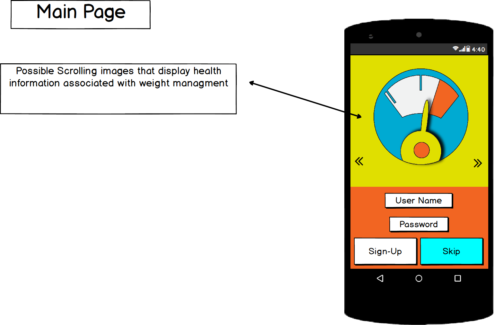 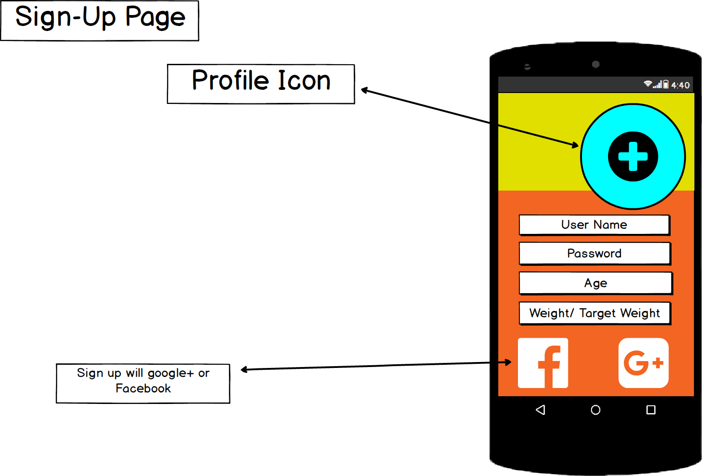 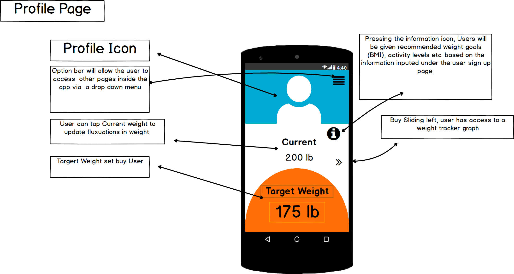 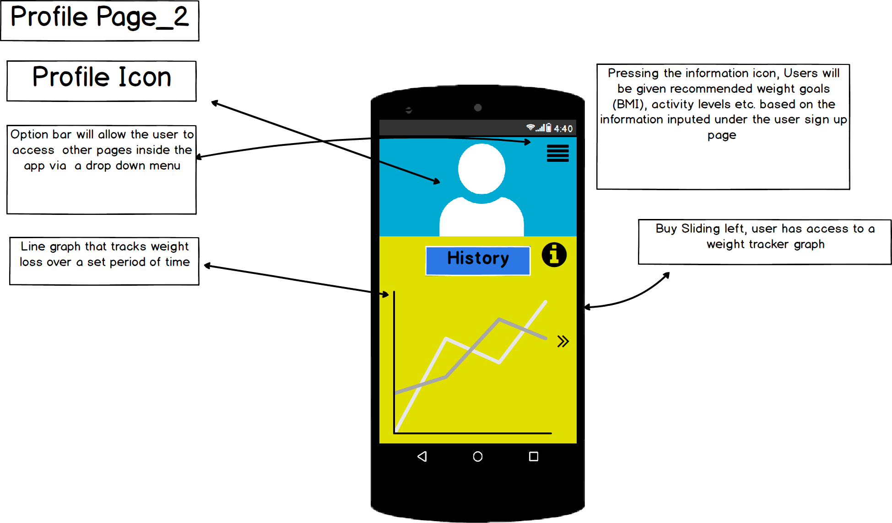 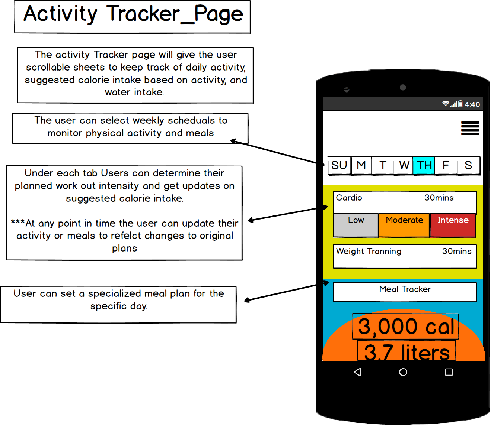 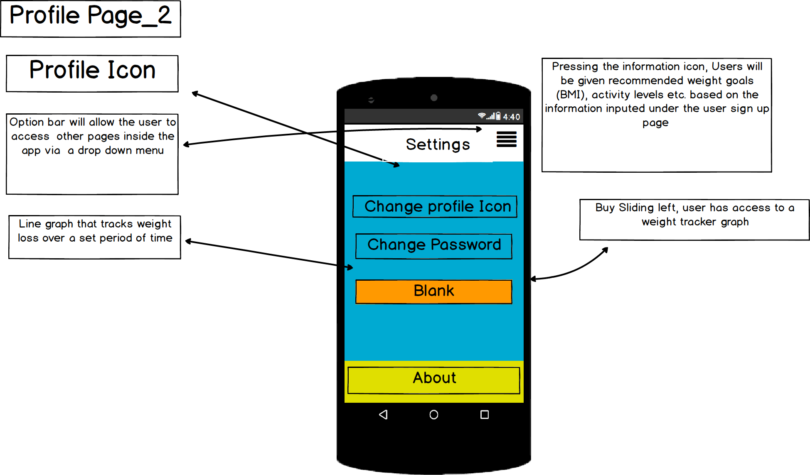Having trouble with Pages? Check out our documentation or contact support and we’ll help you sort it out.
This is our Story Board page.
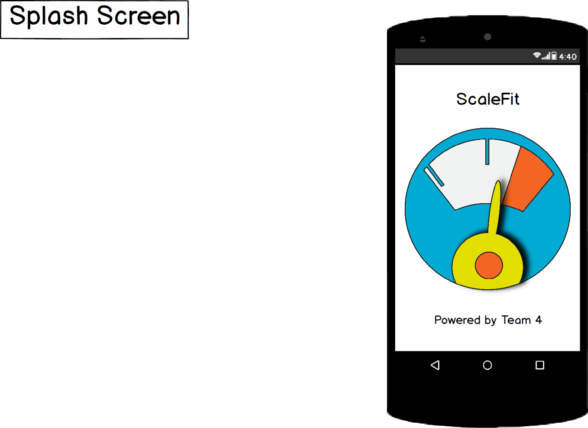 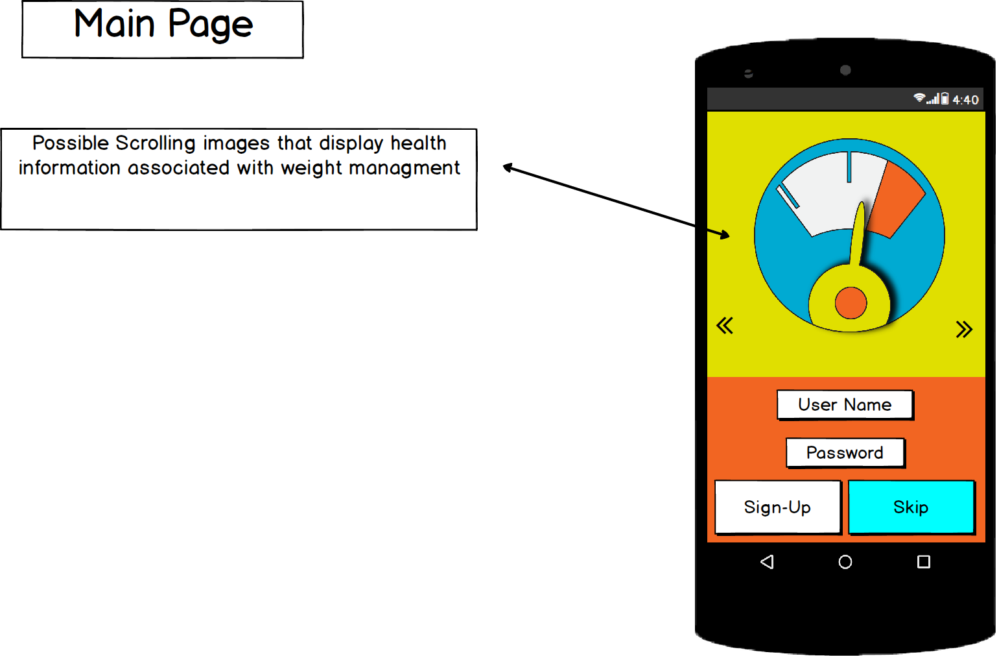 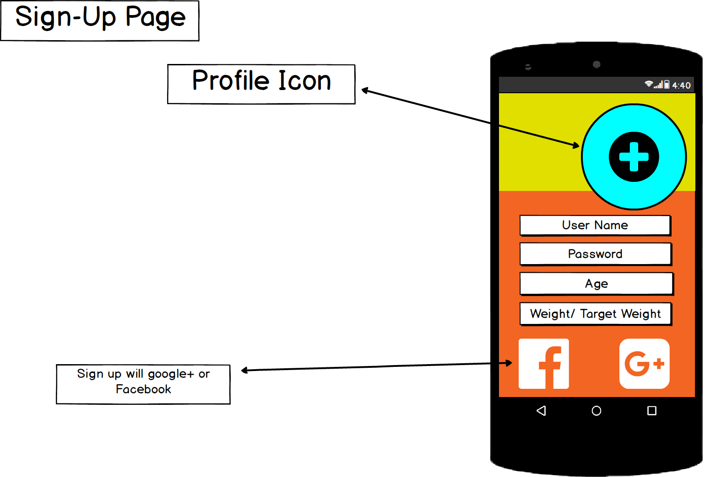 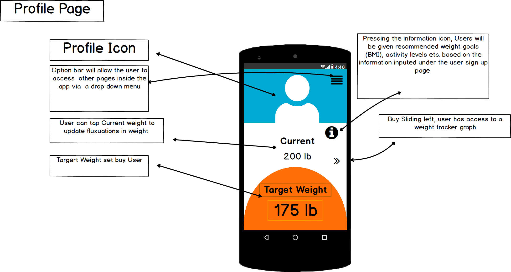 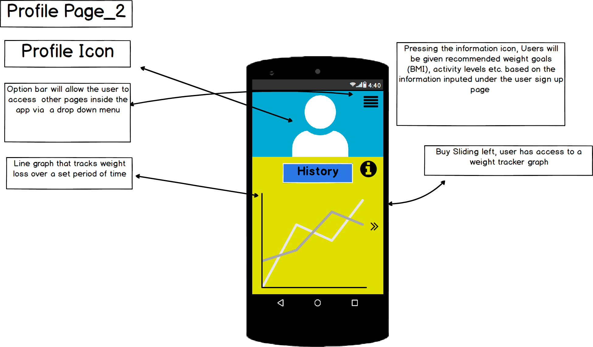 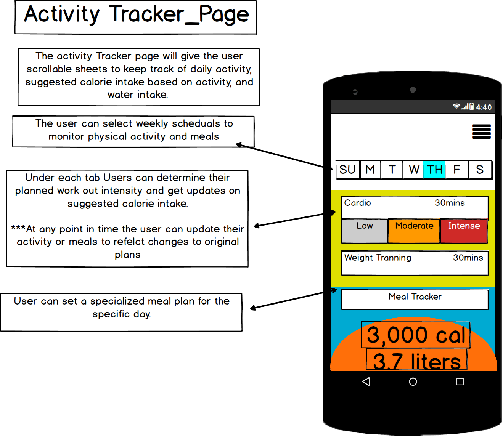 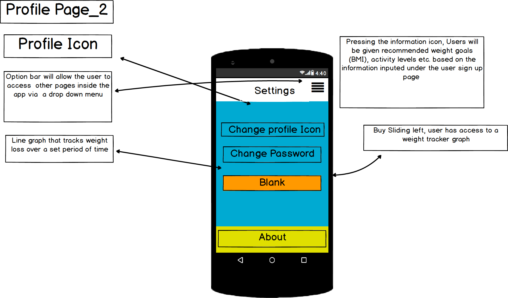Having trouble with Pages? Check out our documentation or contact support and we’ll help you sort it out.